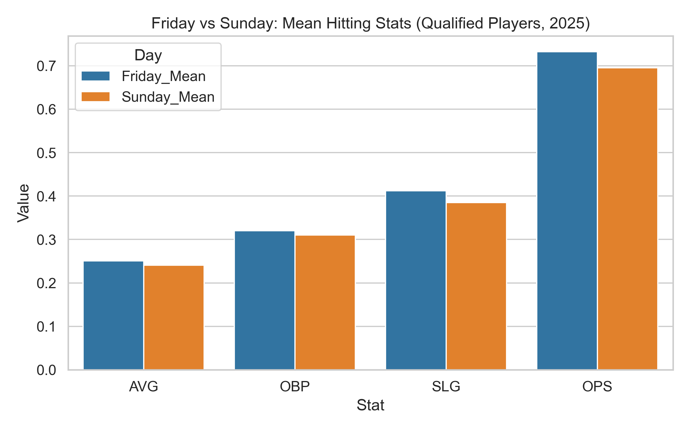

Friday vs Sunday Hitting Analysis
Analyzing OPS trends and player performance differences between Friday and Sunday MLB games.
OPS Distribution
Top 10 Outlier Players by OPS Change
Distribution of OPS Differences
Mean Stat Comparison

← Back
|
Home Page